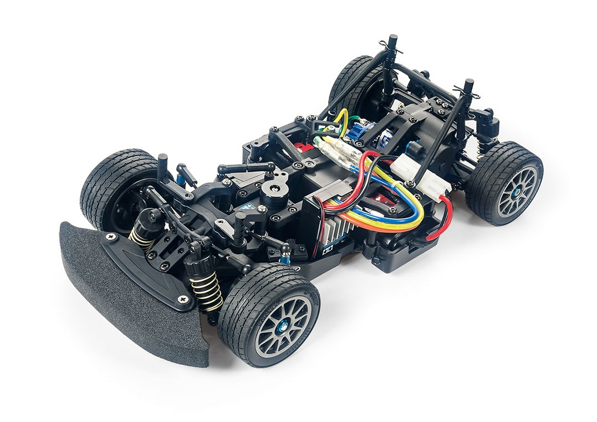

🚗 タミヤ M-08 CONCEPT

画像提供：ぽすとそに工房
📋 基本情報
| メーカー | タミヤ（Tamiya） |
|---|---|
| 機種名 | M-08 CONCEPT |
| 型番 | 58669 |
| 発売時期 | 2019年6月 |
| 生産状況 | 現行販売中 |
| カテゴリー | ラジコンカー（1/10スケール 電動RCカー） |
| サブカテゴリー | Mシャーシ / リヤ駆動（RWD） |
📏 シャーシスペック
| シャーシ長 | 319mm（ホイールベース225mm時） |
|---|---|
| シャーシ幅 | 165mm |
| ホイールベース | 210mm / 225mm / 239mm（3タイプ選択可能） |
| フレーム | 前後分割式モノコックタイプ |
| 駆動方式 | ミドシップモーター・後輪駆動（RWD） |
| デフギヤ | オイル封入式ギヤデフ |
| ステアリング | 3分割タイロッド式 |
| サスペンション | 4輪ダブルウィッシュボーン（CVAオイルダンパー） |
| ギヤレシオ | 6.795:1〜4.813:1の8種類 （キット付属20Tピニオン使用時：5.776:1） |
| モーター | 540タイプ |
💡 特徴
🎯 リヤ駆動の高性能シャーシ
モーターをリヤにミドシップマウントして、駆動輪となる後輪のトラクションと安定性をバランス。加速時にモーターの反トルクを利用して駆動輪に十分荷重がかかるモーターとギヤの配置を採用。
🔧 3種類のホイールベースに対応
前後分割式のメインフレームにより、210mm・225mm・239mmの3種類のホイールベースが選択可能。モーター、デフ、サスペンションを搭載したリヤセクションのレイアウトが変わらないため、ホイールベース変更による走行特性の影響を最小限に抑える。
⚙️ 高性能駆動系
オイル封入式ギヤデフを標準装備。M-07 CONCEPTのロングタイプサスアームを使用し、フルベアリング仕様で駆動効率を追求。
🔄 Mシャーシシリーズの進化
Mシャーシは長いシリーズで、どんどん作りが綺麗になっていっている特徴がある。コンパクトサイズが魅力で、室内サーキット向け。
🔧 ぽすとそに工房での修理実績
修理難易度
★
★
★
★
★
非常に簡単（初心者向け）
よくある故障・注意点
- デフジョイントカップが少し削れやすい - 消耗パーツとして定期的なチェックが必要
修理のポイント
- とても簡単で女性にも人気のシャーシ - 初めての修理にも向いている
- シンプルな構造 - パーツ交換が容易で、誰でも修理しやすい
その他の特徴
- Mシリーズの進化を体感 - 長いシリーズの中で、どんどん作りが綺麗になっている
- コンパクト設計 - 室内サーキットに最適なサイズ感
- リヤ駆動の楽しさ - 4WDとは違った操作感が楽しめる